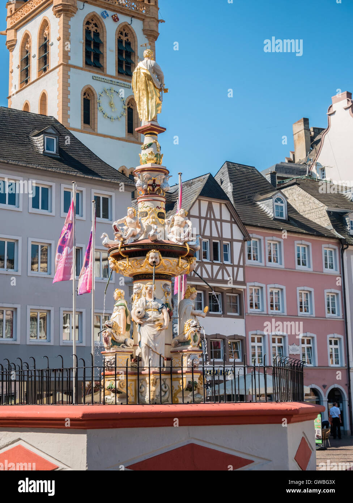

My favourite city
My favorite city is Trier, Germany. It is famous for its beautiful Roman history, ancient buildings, and peaceful atmosphere.

My favorite city is Trier, Germany. It is famous for its beautiful Roman history, ancient buildings, and peaceful atmosphere.
